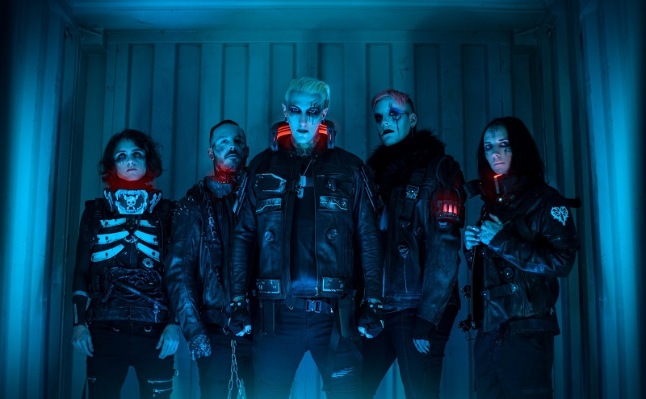
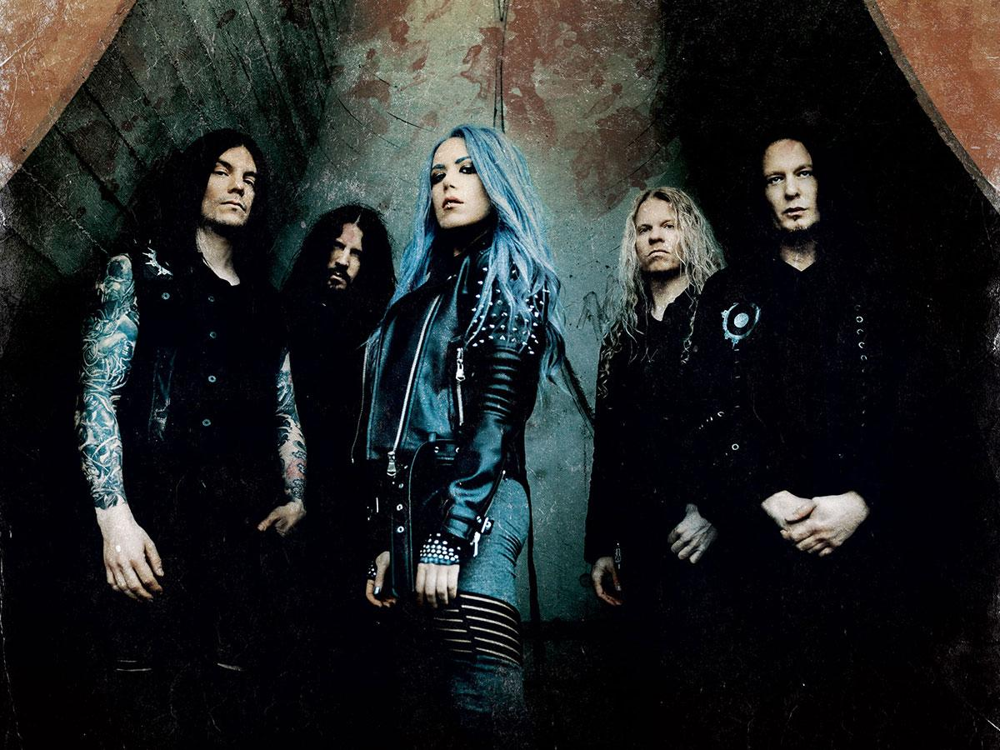
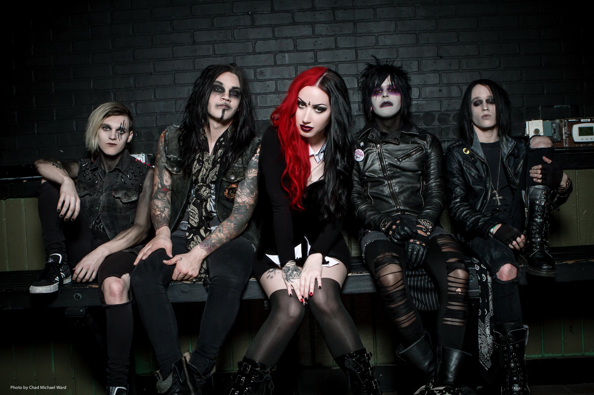
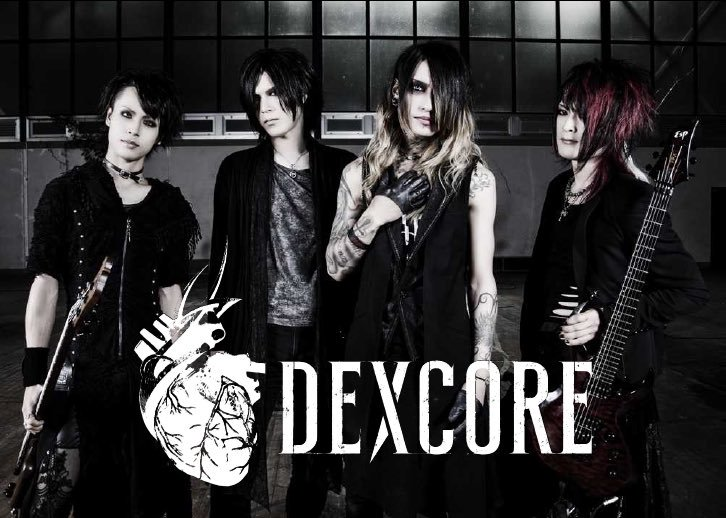

El Metal es un genero musical derivado del Hard Rock, del Acid Rock y del Blues. Ademas incorpora elementos caracteristicos de la musica clasica.
El Metal se caracteriza por el uso de guitarras distorsiondas, bajos robustos y baterias versatiles, todo esto en conjunto para crear un sonido potente, ritmico y estridente.
El uso de energeticos riffs de guitarras, ritmos marcados y dinamicos solos, en su mayoria complejos, rapidos y versatiles, son la base para la composicion de las canciones de este genero.
No hay que dejar a un lado el trabajo vocal de los cantantes de metal, ya que su caracterisitico tono, en ocasiones de alto registro y con gritos atronadores, ademas de letras con topicos misticos
y tabus marcan la rudeza y crudeza de la melodia Metal por excelencia. En el Metal existen muchos subgéneros, algunos muy parecidos y otros totalmente diferentes, por lo que no cualquiera puede
distinguirlos con facilidad. Cada uno intenta expresar algo diferente y de una manera distinta. Pero todos, absolutamente todos, nacieron de la misma “madre”: el Heavy Metal.
Artistas Musicales
Motionless In White

Es una banda estadounidense de metalcore procedente de Scranton, Pensilvania. Se formó en 2005 y está compuesta por el vocalista/tecladista Chris "Motionless" Cerulli, el guitarrista/vocalista Ricky "Horror" Olson,
el guitarrista líder Ryan Sitkowski, el bajista Justin Morrow y el baterista/tecladista Vinny Mauro. AllMusic describe la banda como una mezcla de metalcore, metal gótico y metal industrial. También se les ha llamado "horror-metal".
La estructura de las canciones del grupo comúnmente presenta riffs intrincados junto con blast beats ocasionales durante los versos y breakdowns presentes en las canciones.
Another Life (Album: Disguice)
Arch Enemy

Es una banda sueca de death metal melódico formada en Halmstad en 1995. En sus inicios exploró el death metal original, pero sufrió una transformación musical después del cambio de integrantes que tuvo, y comenzó a hacer un death metal más melódico,
que sigue haciendo actualmente. Sus letras hablan de rebelión y suelen criticar a la sociedad y a la religión cristiana. La banda ha publicado diez álbumes de estudio, dos en directo, tres EP y dos DVD. La banda fue originalmente liderada por Johan Liiva,
hasta que Angela Gossow se unió a la banda como vocalista en 2001. En 2014, Gossow dejó la banda y fue remplazada por Alissa White-Gluz, exvocalista de The Agonist.
The Eagle Flies Alone (Album: Will to Power)
New Year's Day

Es una banda de metal alternativo y metal gotico procedente de Anaheim, California, donde fue fundada en 2005 por Ashley Costello, Keith Drover, Mike Schoolden, Adam Lohrbach y Russell Dixon.
En sus inicios la banda hizo música Pop punk y su primer disco fue lanzado en mayo de 2007, My Dear. NYD, como también se conoce al grupo, está liderado por la vocalista Ashley Costello.
Defame Me (Album: Malevolence)
DEXCORE

DEXCORE es una banda japonesa que tiene su debut el 28 de Octubre del 2016.
Integrantes:
Vo. Kagami → dexcore
Ba. tetsu → Vent Croix(Ba) → Art for Art’s Sake(Vo), dexcore
Dr. Naoki → Cena rate → KUSSE → Berry → deathgaze → DEATHGAZE, dexcore